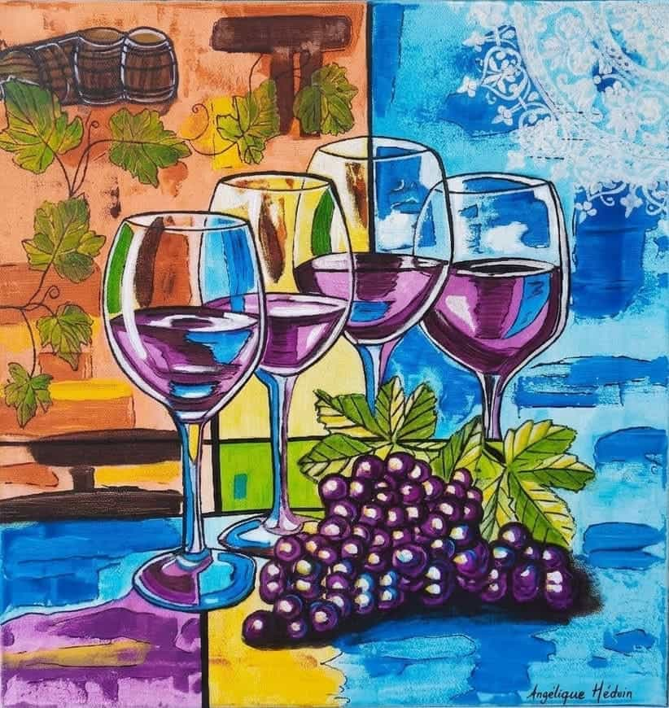

DisponibleN° 26 · Collection 2026 · Nature Morte
Les Quatre Verres
Peinture acrylique sur toile · 2026
Quatre verres de vin alignés captent les reflets du fond : le violet du vin, les bleus, les jaunes. Devant eux, une grappe de raisin aux grains luisants et des feuilles de vigne rappellent la terre d'où tout vient. Le fond est coupé en deux, ocre et orange chaud à gauche avec sa vigne et ses tonneaux, bleus francs à droite rehaussés d'un motif de dentelle blanche. Une toile de couleur, de partage et de convivialité.
Idéal pour
Cuisine · Salle à manger · Bar · Cave · Restaurant · Cadeau
Format50 × 50 cm
TechniqueAcrylique sur toile
Date2026
ÉditionŒuvre unique originale
CertificatCertificat d'authenticité inclus
Disponible
Prix sur demande
Emballage soigné · Certificat d'authenticité inclus
Commandes personnalisées disponibles — contactez-moi